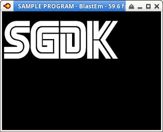

參考資訊：
https://github.com/Stephane-D/SGDK
https://github.com/iratahack/m68k-elf-gcc/releases
main.c
#include <genesis.h>
#include "res.h"
int main(bool hard)
{
VDP_loadTileSet(myimage.tileset, TILE_USER_INDEX, DMA);
VDP_setTileMapEx(BG_A, myimage.tilemap, TILE_ATTR_FULL(PAL0, FALSE, FALSE, FALSE, TILE_USER_INDEX), 0, 0, 0, 0, 30, 12, CPU);
PAL_setColors(0, (u16 *)myimage.palette->data, 16, CPU);
while (TRUE) {
SYS_doVBlankProcess();
}
return 0;
}
main.res
IMAGE myimage "main.png" NONE
P.S. Resource用法可以參考/opt/sgdk/bin/rescomp.txt說明
main.png
編譯、執行
$ java -jar /opt/sgdk/bin/rescomp.jar main.res res.s -dep res.o $ m68k-elf-gcc -I/opt/sgdk -I/opt/sgdk/inc -m68000 -c main.c $ m68k-elf-gcc -x assembler-with-cpp -c res.s -o res.o $ m68k-elf-gcc -m68000 -T /opt/sgdk/md.ld -nostdlib main.o res.o /opt/sgdk/out/release/sega.o /opt/sgdk/lib/libmd.a -lgcc -o rom.out $ m68k-elf-objcopy -O binary rom.out rom.bin $ java -jar /opt/sgdk/bin/sizebnd.jar rom.bin -sizealign 131072 -checksum $ blastem rom.bin
